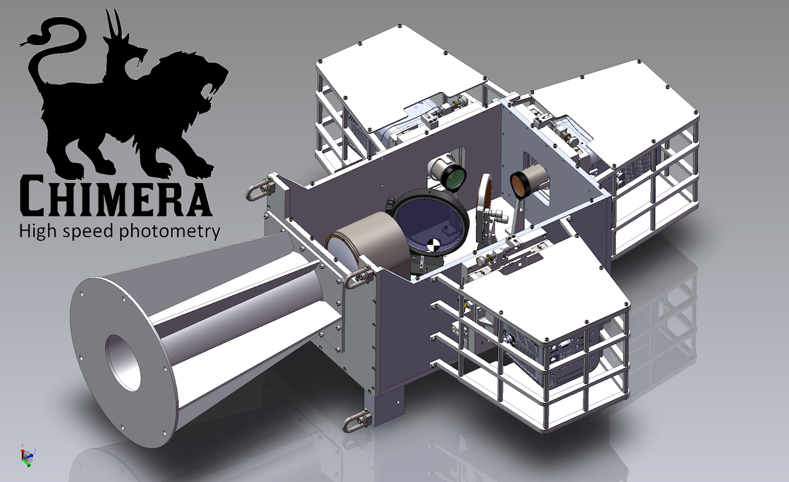

Projects
Things I am currently or have previously worked on
Characterizing the Brightness of LEO Satellite Constellations
Steward Observatory, University of Arizona, 2020-Present
The recent proliferation of LEO satellites is the beginning of a new space era, one with as many as a hundred thousand satellites in the sky. The initial sightings of new satellites by astronomers initiated concern regarding what impact the satellites will have on astronomy, both professional research astronomy and amateur sky gazing.
I began observing LEO satellites, in particular Starlink and OneWeb, in 2020 and created the Pomenis LEO Satellite Photometric Survey. With over 14,000 observations of over 2,000 individual satellites this is the most comprehensive photometric and astrometric survey to date. I developed my own observing software and novel analysis methods including a new metric: the effective albedo which identifies where the satellites are brighter than they could be. I intend to characterize the brightness of LEO satellites across the entire range of visible geometry, and in a way that is relevant to astronomers.
Read more...
High-Speed Photometric Characterization of Space Objects
Steward Observatory, University of Arizona, 2018-Present
Since 2018 I have accumulated over 100 nights of observing time on the Kuiper 61 inch telescope with Chimera, our high-speed photometer. With this observing time I have created a very large catalog of light curves of satellites, rocket bodies, and space debris.
High-speed photometry, and the resulting light curves have significant untapped utility for characterizing space objects. From the light curve alone, we can often identify the object type. Through comparison of light curves we positivley identified near-Earth object 2020 SO as a Centaur D rocket body. Understanding the light curve and reflection characteristics also provide vital supporting information for interpreting other rotationally averaged observations, such as the spectra of HS-376 satellites which the light curves reveal are dominated by specular reflections from the antenna reflector and not the expected diffuse light from the solar cells.
Read more...

Near-IR Characterization of Space Objects
Steward Observatory, University of Arizona, 2020-Present
Using the UKIRT telescope on Mauna Kea we have observed a multitude of satellites, rocket bodies and space debris to develop methodologies and test the efficacy of using color features to characterize space objects. Using the Wide-Field CAMera (WFCAM) we have created a photometric catalog of objects. Further spectroscopic follow-up observations utilize the UIST and Michelle spectrometers.
One ensemble of objects we study is the HS-376 satellite bus. The HS-376 was a common communications satellite bus, notable for its spin-stabilized cylindrical body which is almost completely covered in solar cells. Launched from 1978 to 2003, there are a total of 58 HS-376 satellites which utilized various types solar cells including silicon-based and GaAs-based. Through photometric and spectroscopic observations we are able to differentiate between the silicon-based and GaAs solar cell models.
Read more...
Deep-Space & Cislunar Tracking
Steward Observatory, University of Arizona, 2018-Present
When the opportunity arises I utilize Pomenis and Chimera on the Kuiper 61 inch telescope to track distant satellites and debris beyond GEO orbit. In particular I've tracked many long-period satellites such as Integral, TESS, and Chandra, and some lunar missions during their trans-lunar traverse including Chang'e 5 and Chandrayaan-2. Tracking distant objects like these is an exercise in observing methodology, acquisition, and detection limits. The bright background sky created by the Moon is a unusual challenge that cannot simply be overcome with longer exposures or more senstivie instruments. Read more...
Chimera
Steward Observatory, University of Arizona, 2017-Present
The Steward Observatory SSA team created Chimera to operate regularly on the Kuiper 61 inch telescope. Chimera is a high-speed photometer with simultaneous three-color photometry in the Sloan r’ (562-695 nm), i’ (695-844 nm), and z’ (826-920 nm) bands. The optical design produces well-corrected fields of view of 9.7 x 9.7 arcmin in the z’ band and 6.0 x 6.0 arcmin in r’ and i’ bands. The relativley large field of view (compared to similar instruments) facilitates acquisition and tracking of moving satellites and allows for a variety of photometric calibration methods. The relatively simple optical design uses a wide-field collimator, two dichroic beam splitters, and three re-imaging lens assemblies. Chimera utilizes three Princeton Instruments Pro-EM HS cameras, which record images at rates up to 61 fps in full-frame full-resolution mode. Rates up to 1000 fps are possible by cropping and or binning the detector. Read more...

Pomenis
Steward Observatory, University of Arizona, 2017-Present
The Steward Observatory SSA team created the Pomenis Astrograph System as a novel low-cost large field of view SSA sensor. The astrograph has an exceptionally large 4° x 4° field of view and a fast readout CCD camera. These features enable unique observations not otherwise possible, such as tracking of objects with poorly known ephemeris and observation of fast moving LEO satellites. We carefully selected the aperture and focal length to achieve sensitivity relevant to SSA with an integration time short enough to allow rapid survey of large areas. With its 7-color filter wheel, Pomenis can perform multi-color photometric screening of deep space satellites looking for anomalous behavior and can identify objects for higher fidelity measurements and study. Pomenis is housed in a unique trailer mounted enclosure, which enables the system to be deployed with minimal infrastructure, operated remotely and autonomously, and quickly relocated as required. Read more...

The Dog House Mobile Observatory
Steward Observatory, University of Arizona, 2017-2018
The Steward Observatory SSA team created the Dog House Mobile Observatory Enclosure to house Pomenis, our SSA-dedicated telescope system. The novel trailer-based mobile enclosure allows us to relocate Pomenis for specific scientific missions such as night sky brightness surveys and capturing limited visibilty objects.
I designed and managed the creation of the Dog House, including doing most of the fabrication myself. The Dog House is built on top of a unique drop-deck Air-tow brand trailer. When parked, the entire bed of the trailer is lowered via a hydraulic lifter until the weight rests on the ground and not on the wheels. This produces a stable enclosure without use of outrigger jacks. The roof is a modified version of the Aqawan enclosure and conists of two clamshell halves which open with a compoung sliding and rotating motion. The geometry is specificlaly desgined the clear the wheels of the trailer and provide the lowest sky horizon obstruction. Uniquely, the roof is stable under gravity in both the open and closed position without the use of counter-weights.
Read more...
The design of the mobile enclosure is patent pending (US63/107,203) and available for licensing.

Electro-Optical Sensor Performance Model
Steward Observatory, University of Arizona, 2018
I created a software program to model the end-to-end performance of a user-definable electro-optical system and scenario. The model simulates the propogation of sunlight reflected off the target object and captured by the sensor, and computes the resulting fluxes and final SNR. The model integrates the flux over arbitrary spectral curves defined for each interface the light reflects from or passes through. Through a suite of parameters the user specifics the sensor characteristics (e.g. read noise, pixel size, QE ...) the optical specification (e.g. aperture, focal length, filter ...) and the relevant target object size and distance. The model also includes configurable atmospheric transmission and sky background.

EUSO-SPB1
Colorado School of Mines, 2016-2017
As a pathfinder mission of the Extreme Universe Space Observatory (EUSO) collaboration, a 1 m size telescope flew on a NASA Super Pressure Balloon in 2017. The primary science goal of EUSO-SPB1 was to make the first ever observations of high-energy cosmic ray extensive air showers by looking down at the atmosphere. The telescope consisted of two 1 m x 1 m square acrylic fresnel lenses which provided an approximately 11° x 11° field of view on a 48 x 48 high-speed photomultiplier tube based detector. The Colorado School of Mines High-Energy Astroparticle research team completed final integration and testing of the instrument before shipping it to Wanaka, NZ for flight preparations and launch. The balloon carrying EUSO-SPB1 launched on April 24, 2017 from Wanaka Airport. Unfortunately the balloon sprung a leak and the mission terminated only 12 days into the planned 100 day flight. The payload sunk in the Pacific ocean. A new follow-up mission, EUSO-SPB2, is scheduled to fly in 2023.

EUSO-GLS Prototype
Colorado School of Mines, 2013-2017
The Global Light System (GLS) is a planned network of 12 ground stations which will use Xenon flash lamps and steered UV lasers to create test light sources for calibration of the future Extreme Universe Space Observatory (EUSO) detector on board the International Space Station. The Colorado School of Mines High-Energy Astroparticle research team built a mobile prototype GLS station. The prototype is built into a trailer to allow mobility to and from campus and nearby cosmic ray detectors in Utah (EUSO-TA) and eastern Colorado (AMT). The system includes a high-power UV pulsed laser mounted on an optical table inside the trailer and is equipped with a two-axis steering head which is raised through a sliding-hatch opening in the roof of the trailer. For stability, when deployed the optical table and laser system are decoupled from the chassis of the trailer and are separately supported by a set of outrigger jacks.

Auto-Grader Website
Colorado School of Mines, 2016
A further evolution of Dr. Christopher Painter-Wakefield's homework code testing system, the Auto-Grader website allows students to login and complete small coding assignments online. The website includes a built-in text editor for writing code and an automated testing script. After expiration of a given assignment the students' progress and grades are automatically calculated and prepared for export via the admin login.